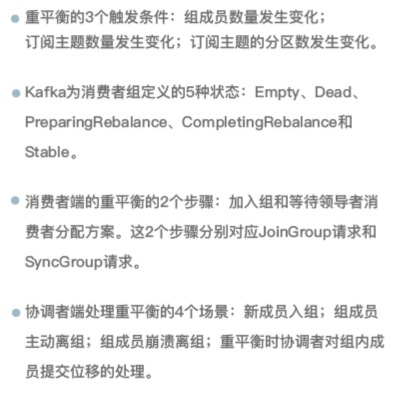

Rebalance (What) #
-
Rebalance 定义
- 在同一个消费者组当中，分区的所有权从一个消费者转移到另外一个消费者
-
原理
- 重平衡的通知机制正是通过心跳线程来完成的 [7]
-
角色
- consumer leader
- cordinator[8]
Rebalance 发生的时机有三个 (when) [1] #
- 重平衡的 3 个触发条件：
组成员数量发生变化。(最常遇到)
订阅主题数量发生变化。
订阅主题的分区数发生变化。
问题和解决方案 #
Rebalance 的 弊端 [1] #
- Rebalance 影响 Consumer 端 TPS
在 Rebalance 期间，Consumer 会停下手头的事情，什么也干不了 - 如果你的 Group 下成员很多， Rebalance 会很慢。
- Rebalance 效率不高
Group 下的 所有成员都要参与进来，而且通常不会考虑局部性原理
consumer rebalance 的问题 #
- Rebalance 过程也和这个类似，在 Rebalance 过程中，所有 Consumer 实例都会停止消费，等待 Rebalance 完成。 这是 Rebalance 为人诟病的一个方面。
【消费者重平衡的时候， 所有的消费者是不能消费数据的。】
“不必要的”的Rebalance (Solution) [1] #
-
第一类非必要 Rebalance 是因为未能及时发送心跳，导致 Consumer 被“踢出”Group 而引发的。 因此，你需要仔细地设置session.timeout.ms 和 heartbeat.interval.ms的 值。
-
第二类非必要 Rebalance 是 Consumer 消费时间过长导致的。
max.poll.interval.ms参数值的设置显得尤为关键。
总结 #

Q&A #
- 消费再均衡的原理是什么？（提示：消费者协调器和消费组协调器）
参考 #
- 《17 | 消费者组重平衡能避免吗? 》 胡夕
- 《15丨消费者组到底是什么？》 胡夕
- 《25 | 消费者组重平衡全流程解析》 胡夕
- Kafka的Rebalance机制可能造成的影响及解决方案
- 线上Kafka突发rebalance异常，如何快速解决？
- 为什么消费客户端频繁出现Rebalance？ 石臻臻
- Kafka消费者客户端心跳请求 石臻臻
- 什么是Kafka消费组协调器 石臻臻